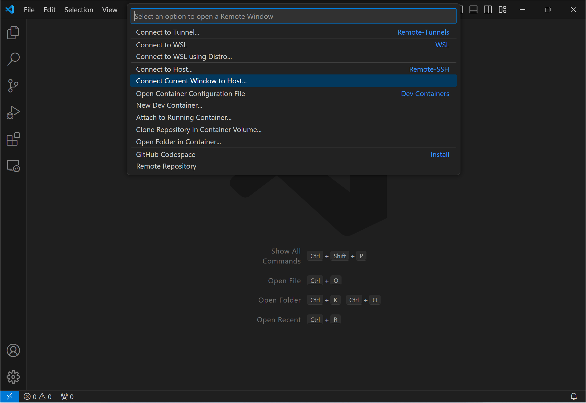
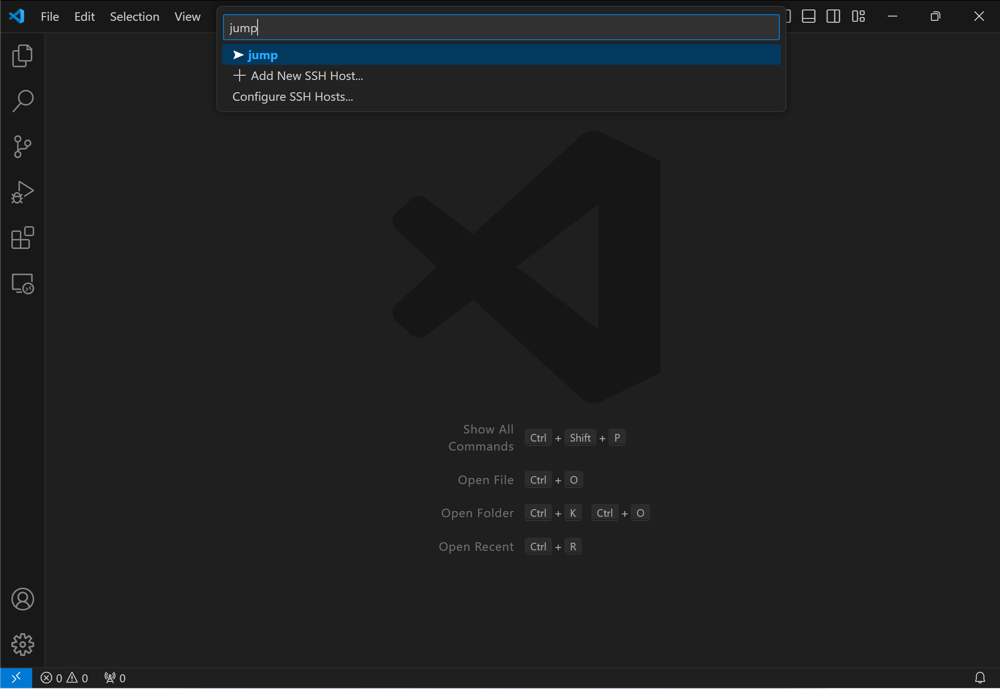

Windows Subsystem for Linux¶
Introduction¶
What is the Windows Subsystem for Linux?
Windows Subsystem for Linux (WSL) is a feature of Windows that allows you to run a Linux environment on your Windows machine, without the need for a separate virtual machine or dual booting. WSL is designed to provide a seamless and productive experience for developers who want to use both Windows and Linux at the same time.
-
Use WSL to install and run various Linux distributions, such as Ubuntu, Debian, Kali, and more. Install Linux distributions and receive automatic updates from the Microsoft Store, import Linux distributions not available in the Microsoft Store, or build your own customer Linux distribution.
-
Store files in an isolated Linux file system, specific to the installed distribution.
-
Run command-line tools, such as BASH.
-
Run common BASH command-line tools such as grep, sed, awk, or other ELF-64 binaries.
-
Run Bash scripts and GNU/Linux command-line applications including:
-
Tools: vim, emacs, tmux
-
Languages: NodeJS, JavaScript, Python, Ruby, C/C++, C# & F#, Rust, Go, etc.
-
Services: SSHD, MySQL, Apache, lighttpd, MongoDB, PostgreSQL.
-
-
Install additional software using your own GNU/Linux distribution package manager.
-
Invoke Windows applications using a Unix-like command-line shell.
-
Invoke GNU/Linux applications on Windows.
-
Run GNU/Linux graphical applications integrated directly to your Windows desktop
-
Use your device GPU to accelerate Machine Learning workloads running on Linux.
(source)
Installation¶
Tutorials¶
Concepts¶
Configuration¶
VPN¶
To make WSL compatible with Cisco AnyConnect VPN, enable mirrored mode
networking and
DNS tunneling by adding
the following to .wslconfig
within the
%USERPROFILE% directory:
Learn more about networkingMode and dnsTunneling
here.
Note
networkingMode=mirrored and dnsTunneling=true require Windows 11 version
22H2
or higher.
VS Code¶
Here we configure VS Code to use the SSH binary provided by WSL, along with the aforementioned SSH config, to have a single SSH config shared by WSL and VS Code.
First, install VS
Code
for your user (not
system-wide).
When prompted to Select Additional Tasks during installation, be sure to check the Add to
PATH option so you can easily open a folder in WSL using the code command. Also, install the
Remote Development extension pack.
Create a Windows batch file to passthrough SSH invocations to the WSL-provided SSH:
Add the following to VS Code's settings.json within the %APPDATA%\Code\User directory:
{
"remote.SSH.path": "C:\\Users\\manselmi\\.ssh\\ssh.bat(1)",
"remote.SSH.remotePlatform": {
"jump": "linux",
"vps": "linux"
},
"security.allowedUNCHosts": ["wsl$", "wsl.localhost"]
}
- Replace with the expansion of
%USERPROFILE%\.ssh\ssh.batfor your user, escaping backslashes as shown here.
Start or restart VS Code. Click the blue Remote Development icon in the lower-left corner, then click Connect Current Window to Host….

Type the name of a SSH host alias defined in the SSH config file, such as jump, then press Enter.

VS Code will then connect and launch a remote session. If you were to select the TERMINAL tab, VS Code would launch a remote shell session.

Learn more about VS Code Remote Development.